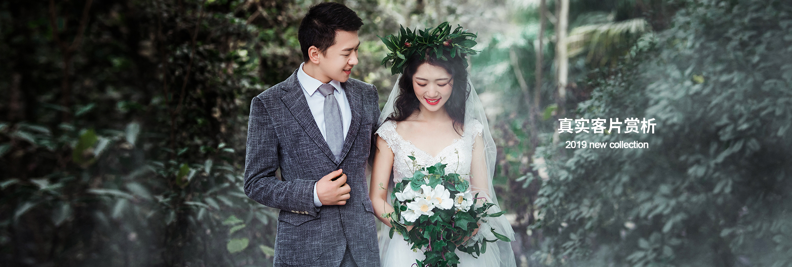
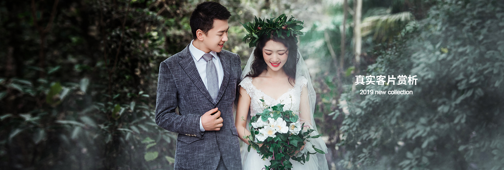

选择摄影
- 梅西-
- 陈墨墨+
- 内马尔+
- C罗+
- 尹超+
- 童梦+
陈漫CHENMAN
陈漫（ChenMan），中国时尚摄影师、视觉艺术家，毕业于中央美术学院。2003年，陈漫开始为《青年视觉》杂志拍摄封面；之后，凭借一系列为《青年视觉》拍摄的作品，在时尚圈崭露头角。2011年4月23日在北京今日美术馆推出个人摄影装置展；11月，“陈漫视觉艺术展”在上海当代艺术馆展出。2012年为《i-D》杂志创作了12幅名为“Whatever the Weather”的系列作品。2014年7月1日，与张靓颖第三次合作封面设计的《第七感》封面正式公布。2015年9月，陈漫的作品
自2003年被造型师李东田发掘后，凭借一系列为《青年视觉》拍摄的独树一帜、具有强烈视觉中击感的作品陈漫开始受到关注，成为众多明星偏爱的摄影师。她的摄影生涯清晰地划出三个分水岭。前期在《青年视觉》时期，运用大量PS技术，浓墨重彩；其后返璞归真，以一寸照片式的极简和写实见长，人送“一灯大师”——只用一盏灯打光，而无后期；再之后是自由创作，尝试摄影的多种可能
陈墨墨CHENMAN
2陈墨墨（ChenMan），中国时尚摄影师、视觉艺术家，毕业于中央美术学院。2003年，陈漫开始为《青年视觉》杂志拍摄封面；之后，凭借一系列为《青年视觉》拍摄的作品，在时尚圈崭露头角。2011年4月23日在北京今日美术馆推出个人摄影装置展；11月，“陈漫视觉艺术展”在上海当代艺术馆展出。2012年为《i-D》杂志创作了12幅名为“Whatever the Weather”的系列作品。2014年7月1日，与张靓颖第三次合作封面设计的《第七感》封面正式公布。2015年9月，陈漫的作品
自2003年被造型师李东田发掘后，凭借一系列为《青年视觉》拍摄的独树一帜、具有强烈视觉中击感的作品陈漫开始受到关注，成为众多明星偏爱的摄影师。她的摄影生涯清晰地划出三个分水岭。前期在《青年视觉》时期，运用大量PS技术，浓墨重彩；其后返璞归真，以一寸照片式的极简和写实见长，人送“一灯大师”——只用一盏灯打光，而无后期；再之后是自由创作，尝试摄影的多种可能
内马尔CHENMAN
3张悦（ChenMan），中国时尚摄影师、视觉艺术家，毕业于中央美术学院。2003年，陈漫开始为《青年视觉》杂志拍摄封面；之后，凭借一系列为《青年视觉》拍摄的作品，在时尚圈崭露头角。2011年4月23日在北京今日美术馆推出个人摄影装置展；11月，“陈漫视觉艺术展”在上海当代艺术馆展出。2012年为《i-D》杂志创作了12幅名为“Whatever the Weather”的系列作品。2014年7月1日，与张靓颖第三次合作封面设计的《第七感》封面正式公布。2015年9月，陈漫的作品
自2003年被造型师李东田发掘后，凭借一系列为《青年视觉》拍摄的独树一帜、具有强烈视觉中击感的作品陈漫开始受到关注，成为众多明星偏爱的摄影师。她的摄影生涯清晰地划出三个分水岭。前期在《青年视觉》时期，运用大量PS技术，浓墨重彩；其后返璞归真，以一寸照片式的极简和写实见长，人送“一灯大师”——只用一盏灯打光，而无后期；再之后是自由创作，尝试摄影的多种可能
尤奕CHENMAN
4尤奕（ChenMan），中国时尚摄影师、视觉艺术家，毕业于中央美术学院。2003年，陈漫开始为《青年视觉》杂志拍摄封面；之后，凭借一系列为《青年视觉》拍摄的作品，在时尚圈崭露头角。2011年4月23日在北京今日美术馆推出个人摄影装置展；11月，“陈漫视觉艺术展”在上海当代艺术馆展出。2012年为《i-D》杂志创作了12幅名为“Whatever the Weather”的系列作品。2014年7月1日，与张靓颖第三次合作封面设计的《第七感》封面正式公布。2015年9月，陈漫的作品
自2003年被造型师李东田发掘后，凭借一系列为《青年视觉》拍摄的独树一帜、具有强烈视觉中击感的作品陈漫开始受到关注，成为众多明星偏爱的摄影师。她的摄影生涯清晰地划出三个分水岭。前期在《青年视觉》时期，运用大量PS技术，浓墨重彩；其后返璞归真，以一寸照片式的极简和写实见长，人送“一灯大师”——只用一盏灯打光，而无后期；再之后是自由创作，尝试摄影的多种可能
尹超CHENMAN
5尹超（ChenMan），中国时尚摄影师、视觉艺术家，毕业于中央美术学院。2003年，陈漫开始为《青年视觉》杂志拍摄封面；之后，凭借一系列为《青年视觉》拍摄的作品，在时尚圈崭露头角。2011年4月23日在北京今日美术馆推出个人摄影装置展；11月，“陈漫视觉艺术展”在上海当代艺术馆展出。2012年为《i-D》杂志创作了12幅名为“Whatever the Weather”的系列作品。2014年7月1日，与张靓颖第三次合作封面设计的《第七感》封面正式公布。2015年9月，陈漫的作品
自2003年被造型师李东田发掘后，凭借一系列为《青年视觉》拍摄的独树一帜、具有强烈视觉中击感的作品陈漫开始受到关注，成为众多明星偏爱的摄影师。她的摄影生涯清晰地划出三个分水岭。前期在《青年视觉》时期，运用大量PS技术，浓墨重彩；其后返璞归真，以一寸照片式的极简和写实见长，人送“一灯大师”——只用一盏灯打光，而无后期；再之后是自由创作，尝试摄影的多种可能
童梦CHENMAN
6陈漫（ChenMan），中国时尚摄影师、视觉艺术家，毕业于中央美术学院。2003年，陈漫开始为《青年视觉》杂志拍摄封面；之后，凭借一系列为《青年视觉》拍摄的作品，在时尚圈崭露头角。2011年4月23日在北京今日美术馆推出个人摄影装置展；11月，“陈漫视觉艺术展”在上海当代艺术馆展出。2012年为《i-D》杂志创作了12幅名为“Whatever the Weather”的系列作品。2014年7月1日，与张靓颖第三次合作封面设计的《第七感》封面正式公布。2015年9月，陈漫的作品
自2003年被造型师李东田发掘后，凭借一系列为《青年视觉》拍摄的独树一帜、具有强烈视觉中击感的作品陈漫开始受到关注，成为众多明星偏爱的摄影师。她的摄影生涯清晰地划出三个分水岭。前期在《青年视觉》时期，运用大量PS技术，浓墨重彩；其后返璞归真，以一寸照片式的极简和写实见长，人送“一灯大师”——只用一盏灯打光，而无后期；再之后是自由创作，尝试摄影的多种可能
作品展示EXHIBITION OF WORKS